Introduction
I've seen a little DS9, and I've been trying to convince my wife to watch it with me in the evenings. She made it through TNG, Voyager, Picard, and Lower Decks, but she's just not ready for DS9. So most of my thematic observations are going to be based on regurgitating information from Memory Alpha, or clips I've seen periodically.
I also wanted to do Sisko because even though he's likely the second-most known captain in the base game, he's a bit more complex than Picard and so newer players are going to want some suggestions on how to play him. As for the Deck itself, I found Captain Sisko immensely rewarding to play with. He has an extremely strong development pile and can complete his missions quite effectively compared to some other captains. However, he can be undercut by an aggressive opponent, be they human or synthetic, so pacing is really critical to maximize his potential.
↑ back to topCaptain Board
Sisko's captain board side track multipliers max out at 7x for Research, 6x for Influence, and 6x for Military. As always the advanced side's thresholds are one less with slightly different placement of the multipliers.
↑ back to top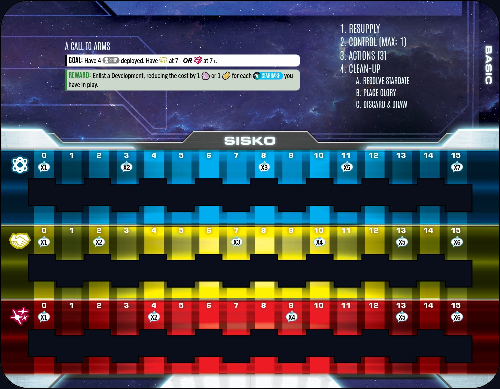
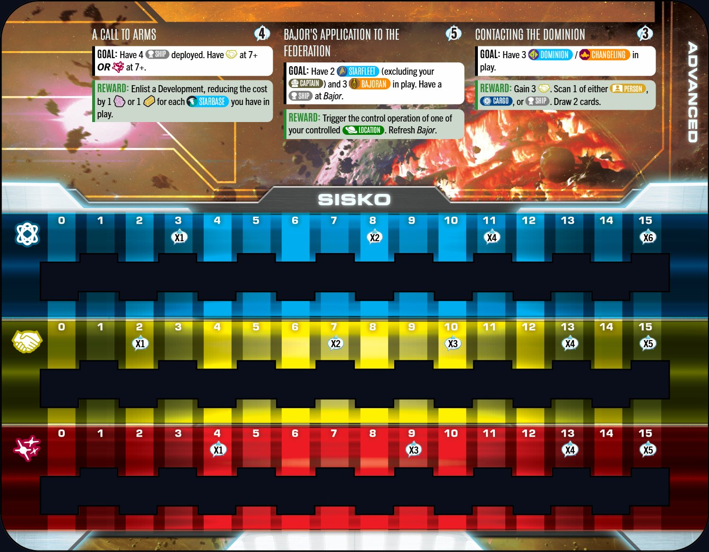
Missions
His base side mission is A Call to Arms, which requires four ships deployed and either the Military or Influence tracks at seven or more. While DS9 itself is a Ship tag, you'll need to get at least one ship from the market to complete this mission, in addition to focusing on one of the tracks pretty intensively. As a reward, you get to enlist a Development, reducing the cost by one Dilithium or one Latinum for each Starbase in play. Again, DS9 counts as a Starbase, but you'll want to focus on trying to get Starbases when they pop up in the neutral locations. Sisko can assist in that task as well. Sisko's Advanced board gives you four points for completing A Call to Arms.
His second mission, Bajor's Application to the Federation, is a bit more complicated. You have to have two Starfleet in play besides Sisko, and three Bajoran tags in play, and have a Ship on Bajor. There aren't a ton of Bajoran tagged cards (Sisko has Kira and People of Bajor), but I believe Bajor itself counts towards this goal. You get five points for completion of this mission as well as a repeat of a control operation of one of your controlled locations, and a refresh of Bajor, which can get you some extra card draw.
The third mission, Contacting the Dominion, requires three total Dominion or Changeling cards in play. It results in three points, three Influence, a Scan one of the Person, Cargo, or Ship decks, and two card draw. Sisko has only one Changeling, Odo, and there's one in the Person deck (Laas). There are two Dominion cards, the Son'a Cruiser and the Karemma Ally. But assuming you can't get those, Sisko has two wildcard trait developments that can assist later on.
↑ back to topCaptain Card & Starting Components
Sisko gets the max number of six away teams. His status as a Bajoran prophet gives him a Transcendent tag in addition to his Human and Starfleet tags. He has a reaction that gives you two Dilithium when you gain control of a location, and an Activation that costs an action token, but allows you to send an away team to a location with the Starfleet or Starbase tags. Considering that you have to choose between one or the other (unless you can refresh Sisko after using the reaction), you may need to think ahead and not take your Dilithium bonus if you intend to use Sisko's activation. He scores at Endgame one point for every controlled location you have, which means logging controlled locations has a downside.
Sisko starts with a deployed ship, of sorts, Deep Space 9, which is also a Starbase and has a Cardassian tag reflecting its status as a "tacky Cardassian fascist eyesore." In addition to having a deploy play action, DS9 allows you to beam or recall cards beamed as an Activation, which makes sense. Its passive ability prevents it from warping, therefore it won't be dismissed and if you couldn't recall cards there would be no way to return them to your hand or discard pile. You also have the standard person promotion.
Finally, Sisko gets a controlled location at the start of the game, in the form of Bajor. It has an Influence Skill, which is a favorable track for Sisko. It also has the same activation text as Farpoint Station and Andoria, where you can draw one card for an away team on Bajor, and if you have three or more on controlled locations you can draw another card. Worth noting that you can still use this activation to draw one card if you have three away teams on controlled locations other than Bajor, even if Bajor doesn't have any.
↑ back to top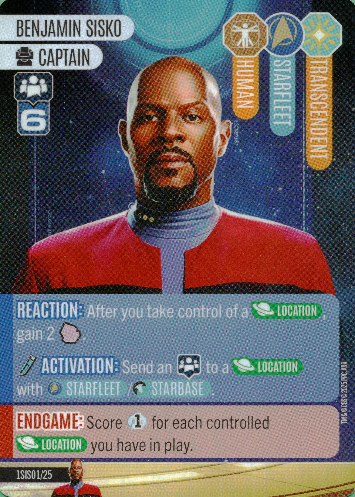
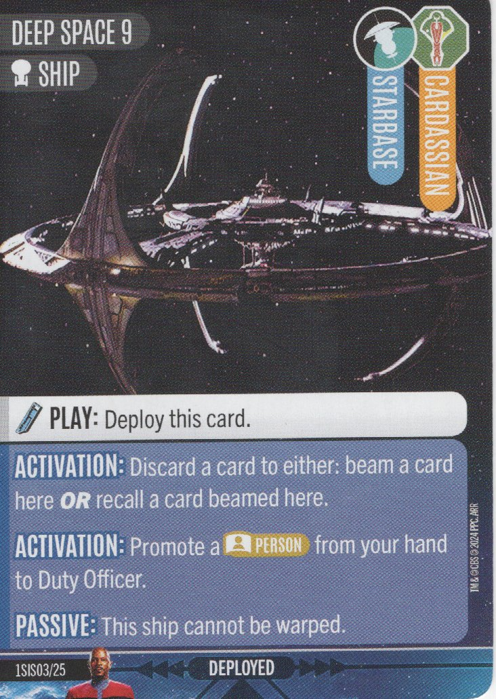
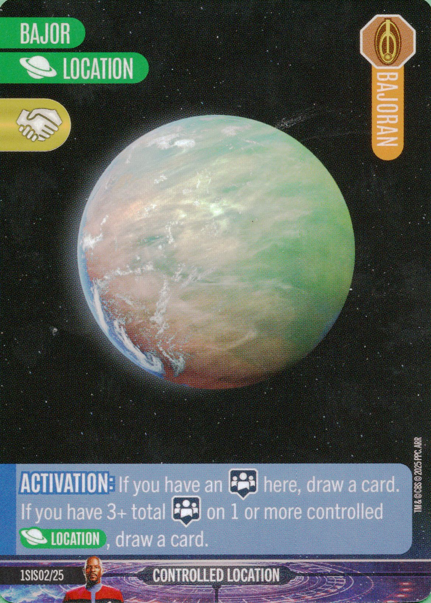
Sisko's Available Cards
Sisko has 10 available cards. There is one location, three persons, a Ship, four directives, and an incident. Worth noting that Sisko has four of the same directive cards as Picard, so they won't be covered in much detail here.
↑ back to topThe Wormhole (Location)
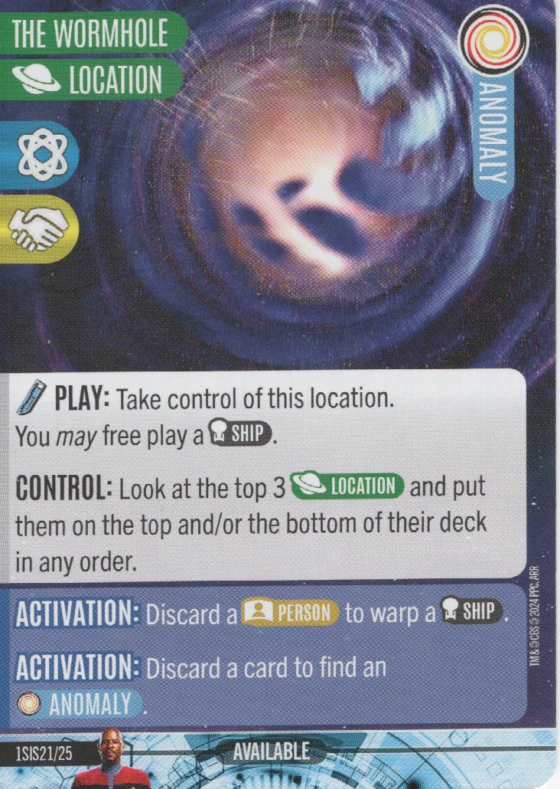
Introduced right from the start of DS9 as a method of connecting the otherwise bottle-episode prone show to a new frontier (the Gamma Quadrant), The Wormhole is an Anomaly with one Research skill and one Influence skill. When you use an action token to take control of The Wormhole, you can free play a ship, which in your starting deck will be limited to the U.S.S. Rio Grande. Upon control, you can also look at the top three locations of the location deck and put them in any order on the top or bottom of the deck, which is a great way to bypass the first starting location on the top of the deck. It has some interesting activations too, allowing you to discard a person to warp a ship (great if there's no Dilithium), and another that allows you to discard a card to find an Anomaly card. While "Find" includes your reserve, there are no Anomaly cards in Sisko's reserve, so you'll have to obtain some Anomaly cards (or wildcards) to start using this ability.
↑ back to topQuark (Person)
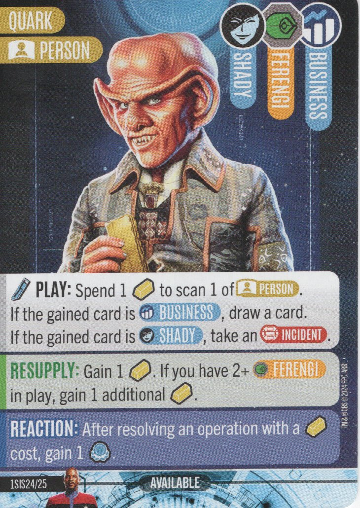
DS9's resident entrepreneur/criminal element, Quark has the Ferengi tags in addition to Business and Shady. His play action costs one Latinum and provides a Person scan of one, with a card draw benefit for a Business tag and an Incident penalty for a Shady tag. He has a Resupply that gains him a Latinum, or two if you have another Ferengi in play in addition to Quark. His reaction provides a glory any time you resolve any operation that costs a Latinum, which I love using in coordination with Jadzia Dax.
↑ back to topKira Nerys (Person)
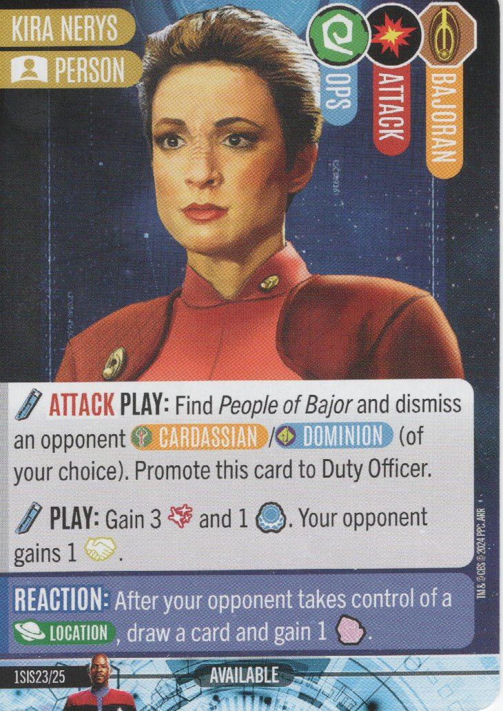
Kira's an interesting one. She gets the Ops and Bajoran tags in addition to her Attack tag. Both of her Play actions cost an action token, and the second one is more straightforward, gaining you three military and a glory and giving your opponent one Influence. Alternatively you can Find the Reserve Ally People of Bajor (even if it's still in your Reserve deck) and dismiss an opponent's Cardassian or Dominion Duty Officer. Then you promote Kira to duty officer. Right now there's only one market card that has a Cardassian tag (Joret Dal) and none with Dominion (though there is a Changeling, Laas). Regardless this dismiss ability isn't going to come into play often until we see some expansion material. The good news is that you can always promote Kira to duty officer, even if DS9 gets dismissed. The bad news is that her action pretty much only gets one use early, in order to grab People of Bajor, at least for now. Her Reaction is pretty great, allowing for a card draw and Dilithium gain when your opponent gains a location.
↑ back to topJadzia Dax (Person)
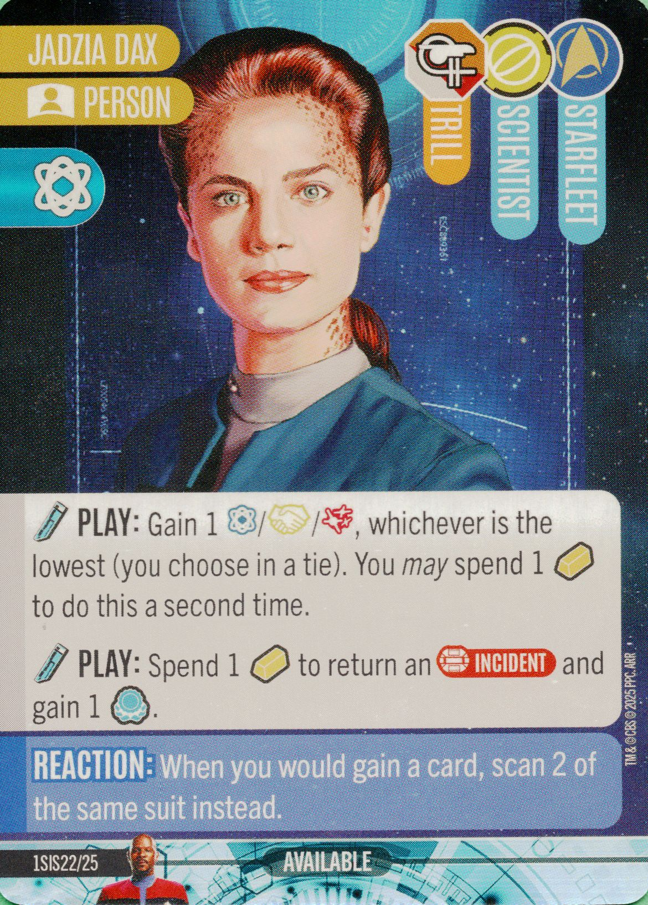
Dax shows up in Koloth's deck too, as the old man Sisko references periodically when he calls Jadzia an old man. A Trill/Starfleet/Scientist, she gets one research tag for when she's in staging or duty officer positions. Her first play action allows her to gain on your lowest skill track with you choosing in a tie, and allowing you to do it again for a Latinum cost. Alternatively you can return an incident and gain a glory for a Latinum. I'll mention again that this is great with Quark's reaction, as you can return an incident and gain two glory (net four points). Her reaction allows you to scan two anytime you would gain a market card, which is fantastic and allows for so much more control of your card selection.
↑ back to topU.S.S. Rio Grande (Ship)
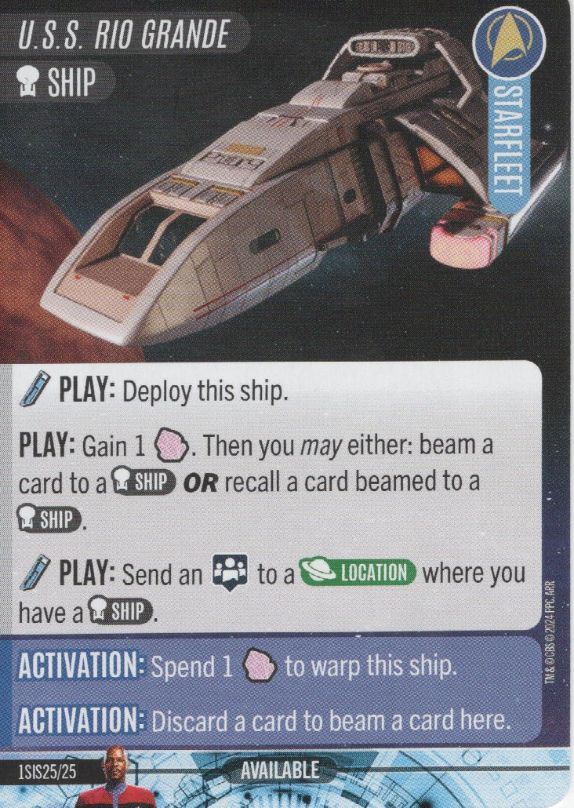
Where Picard's shuttlecraft cannot be deployed, Sisko gets the advantage of at least using his runabout. If you deploy the Rio Grande, it can be warped and have cards beamed as usual. It also comes with a free action that gains you a Dilithium and allows for a card beam or recall from another ship without having to discard a card. This is great, because Sisko lets you squirrel away more cards than most captains early on. You can also use the Rio Grande to send an away team to a location where you have a ship, but at the start of the game that isn't anywhere because you'll need to get another ship besides DS9 to use this ability.
↑ back to topRecruit (Directive)
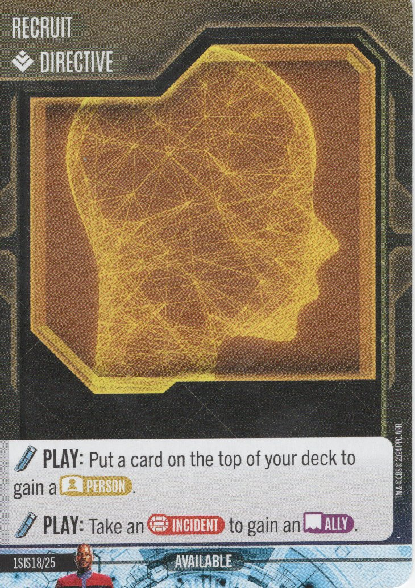
Recruit is your main way of getting new persons or ally cards at the start of the game. Sisko will probably need some more person cards before you delve into your Reserve and Developments. Otherwise there's not much unique to Sisko in the strategy behind this card.
↑ back to topSet A Course (Directive)
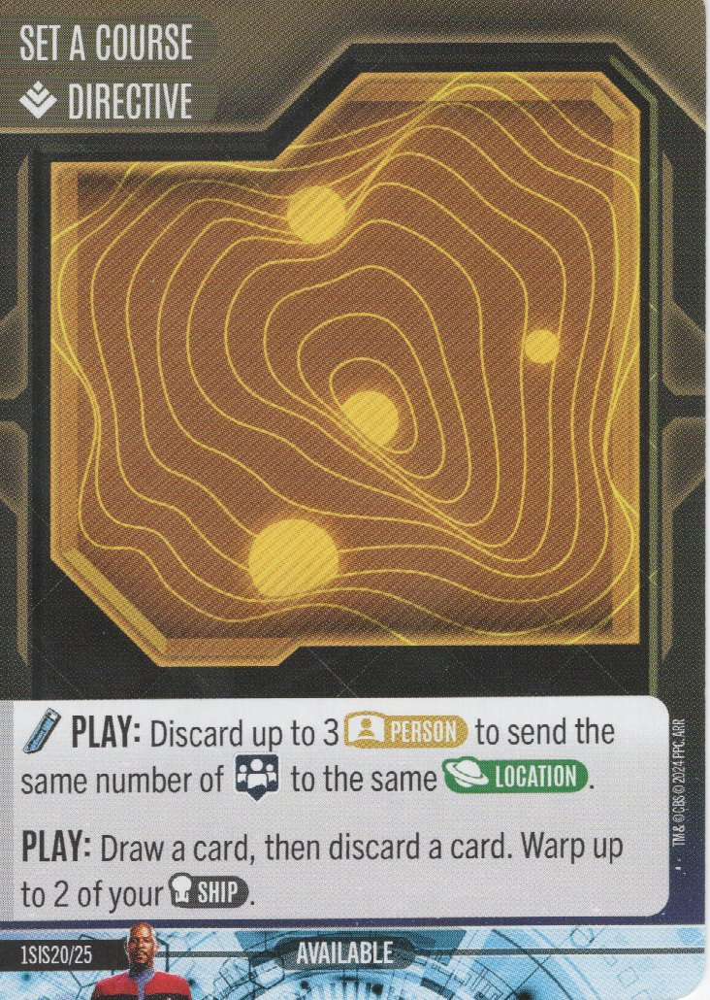
Can you use Set a Course to send away teams? Absolutely you can. But as Sisko only has 3 person cards, you may want to use it early on to warp ships or draw cards from your deck. Building up some extra person cards may make it more useful, though in a pinch it's a possible starting strategy, if you don't mind not getting a duty officer on your opening turn.
↑ back to topAnalyze (Directive)
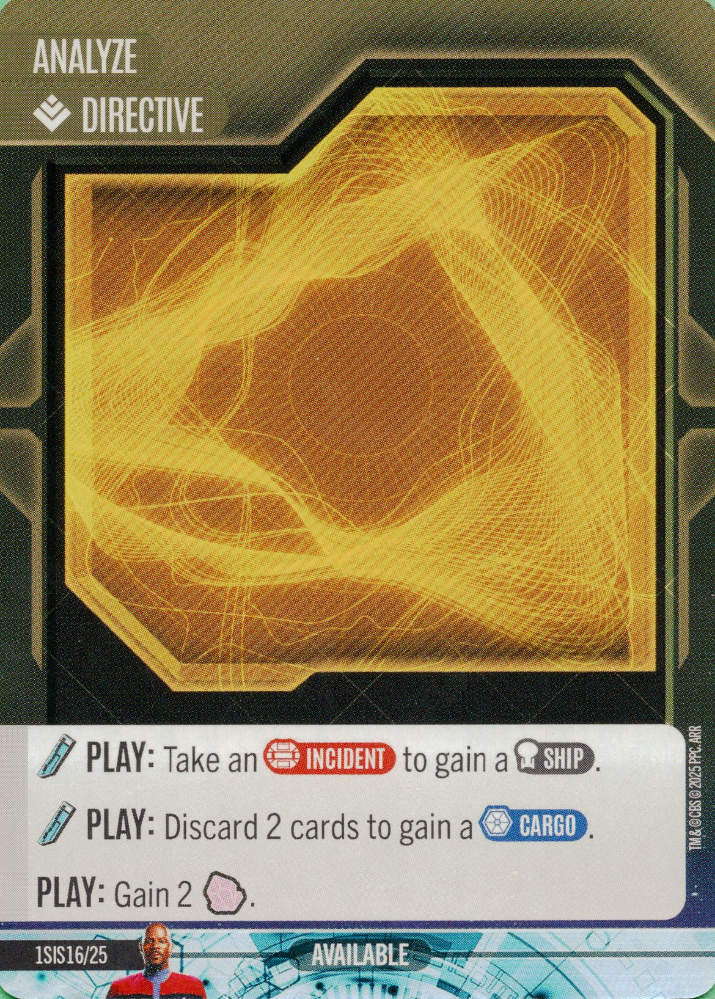
With Sisko, I usually focus on getting more ships with Analyze, especially since his mission requires four ships and you only have three in your decks to start. Sisko doesn't necessarily benefit from cargo more than any other captain, but be willing to be flexible, especially if Orb of Time pops up. You may find yourself without action tokens, at which point a free two Dilithium gain isn't a bad option.
↑ back to topUtilize (Directive)
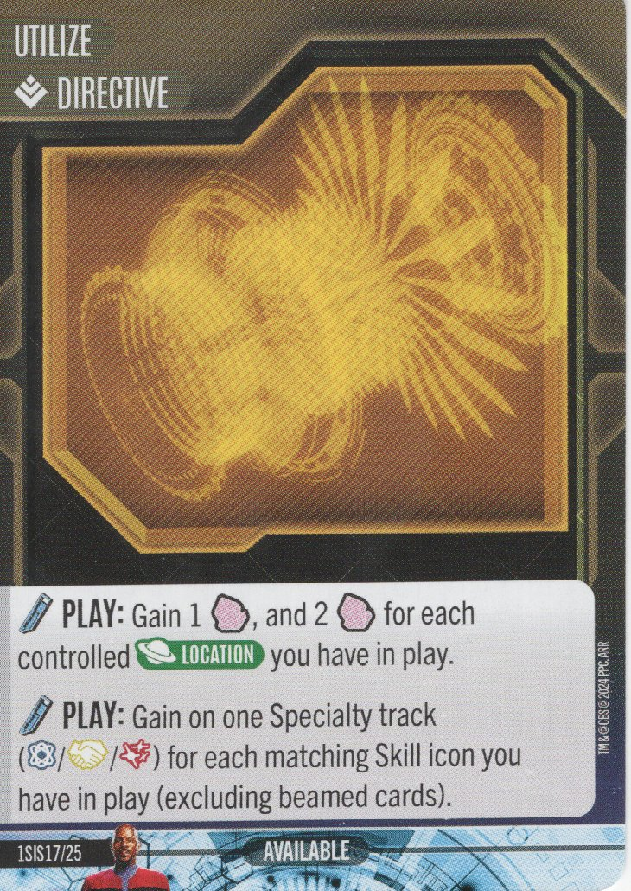
Most decks have this card as your primary method of gaining Dilithium or gaining on skill tracks. If you're using Kira repeatedly for military skill, you may not need Utilize early for completing your A Call to Arms mission, and can instead use it for Dilithium. However, Sisko has a Dilithium engine that kicks in when he controls locations, so you might not need Dilithium directly via Utilize. Early, I'd suggest getting some Dilithium just to have the ability to Analyze and gain more ships or cargo.
↑ back to topPolitical Crisis (Incident)
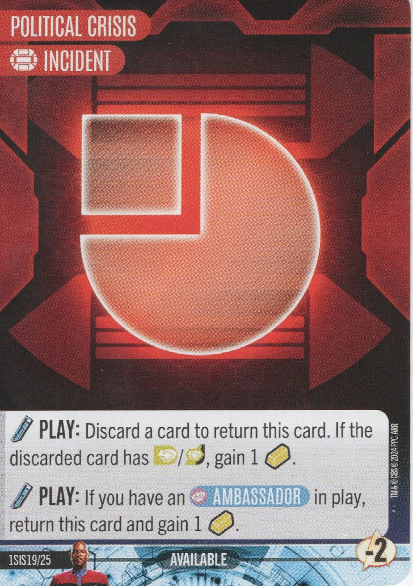
Sisko shares this card with the Incident deck version. When he plays it, he's got the opportunity to gain some Latinum if he discards a card with an Influence skill or focus, or if he's got an Ambassador in play. This is a good one to have since both Quark and Jadzia favor Latinum and his developments can be pretty Latinum-cost intensive. As always it's negative two points if you keep it at the end of the game.
↑ back to topStarting Hand Strategies
I feel like Sisko's starting hand revolves around a few specific scenarios, and most of them start with the question of whether you have The Wormhole and whether you want it played or not. Usually, the question of whether to play The Wormhole for me centers around whether you can actually benefit from its control action. If you don't have the Rio Grande in your starting hand, or don't intend to deploy it, then it feels like you should just wait to get The Wormhole out and should instead use it as your beaming discard card, if possible. If you do play The Wormhole and then free play the Rio Grande, that leaves three cards. Hopefully one is Kira, because that would take care of gaining People of Bajor from the jump and get you a duty officer who will be useful since you aren't busy controlling locations and your opponent might be. Then I'd play People of Bajor for its first free action to draw another card and you'll have an Incident in hand too. From there, it's just a question of which card you want to beam to DS9 while using Sisko's activation to send an away team (if possible) to a location, or if you want to play one of your other three cards for its play action.
If you have Utilize, you could get five Dilithium off of having Bajor and The Wormhole controlled. If you don't use Sisko's activation, you could gain two Dilithium when you control The Wormhole, then use Analyze to get a Ship. You just have to hope that you aren't stuck with two cards you can't use like Political Crisis and Set A Course.
Speaking of Set a Course, if you happen to get a hand of all three persons and Set A Course, should you use them to immediately send three away teams to a location? I would say probably yes, and this is about the only circumstance where I would use Set A Course from the start. You'll be giving up a duty officer this round, but you'll be able to send three away teams somewhere. From there it's just a question of whether you send them to a highly desired neutral planet (preferably one with Starfleet/Starbase for Sisko's activation to help you secure the planet beyond it being taken over) or if you send them to Bajor for two card draw. Honestly, I'd prefer the second option because then you have a three card hand that you can actually do something with.
I personally still favor Quark as duty officer to benefit from Jadzia. If you happen to have them both, I think promoting Quark to duty officer first thing, then using Jadzia as action one to return Political Crisis is a pretty efficient way of thinning your deck from incidents early, while also pressuring your opponent on the endgame right from the start. Keep in mind that only three of the starting locations have a Starfleet or Starbase tag, so don't plan around using Sisko's ability then realize you can't use it. Between DS9 and the Rio Grande, you could easily beam two cards to DS9 (skipping duty officer promotion this turn, or using Kira to self-promote). If you want to thin your deck early, besides using The Wormhole getting rid of Political Crisis, I think that trying to beam two cards to DS9 is a good strategy.
↑ back to topSisko's Reserve Cards
Sisko has five reserve cards consisting of two Person cards, one Ship, one Directive, and one Ally. I'll review them individually then discuss.
↑ back to topPeople of Bajor (Ally)
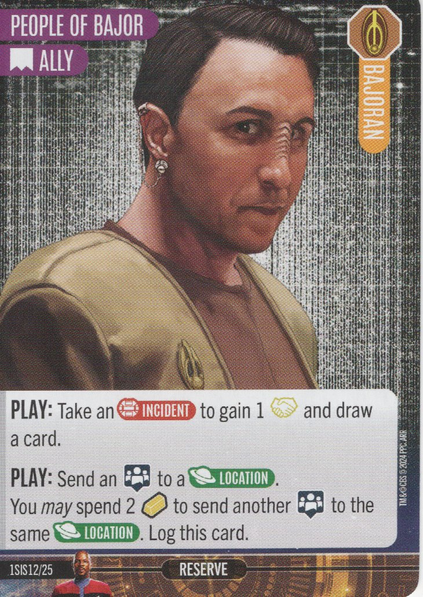
I'm starting here because People of Bajor can have an impact on the game very early, as you can find them and use them from turn one using Kira. Their actions are free, and the first provides an Influence and drawn card at the cost of taking an incident. On turn one that's not a big deal, because you can use the Incident as your discard card for your beam to DS9. The second action allows for sending an Away Team, and for two Latinum more you can send another to the same location. The problem is then the card gets logged, so you only get this benefit one time. I'm always hesitant to use it on the first turn, especially since you probably only have one Latinum. If I get this on the first turn, I'm likely doing the first action. By the time I have a little Latinum built up, I'll probably be logging this card. You also can use it for your second mission, Bajor's Application to the Federation, and unless you get a bunch of wildcards (which you will have a chance for in developments), you'll need to save People of Bajor until that mission is complete. I would try to use Kira to get People of Bajor quickly, otherwise when he comes up organically in your reshuffle you essentially have one more trip through your deck to get to your developments. Let Kira find him, and thin your reserve deck.
↑ back to topMiles O'Brien (Person)
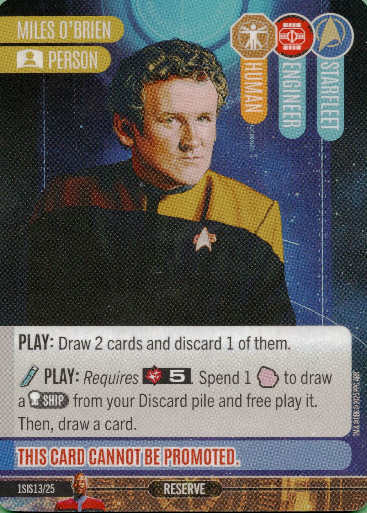
Okay, so elephant in the room, this card has the best thematic text preventing Miles from being promoted. If Harry Kim doesn't have this too, I'll be outraged (figuratively). Miles is an enlisted Engineer in Starfleet as represented by his tags. He has a free play action that allows you to draw two cards and discard one, which I always enjoy because it gives you options. His other Play action requires five military (not hard if you've used Kira twice for six) and costs a Dilithium to free play a ship from your discard pile. To quote Colm Meaney's character Duncan Malloy in Con Air, this is F****** spectacular! Free play of a ship? Awesome. And you get to draw a card too, which is almost as good as his free action itself. This is a great way to send ships to control locations, then turn around and do it again.
↑ back to topOdo (Person)
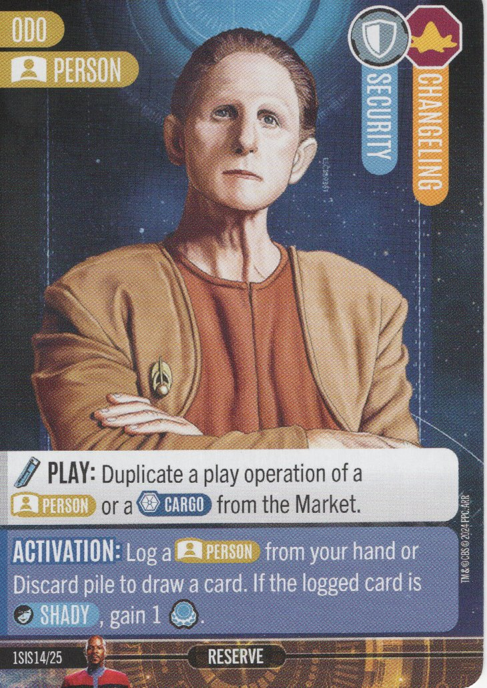
Everyone's favorite Changeling Security officer for DS9 reflects his fluid nature by allowing captains to duplicate a play operation of a Person or Cargo from the market. Be sure to review the rule section on duplicate closely, as many rule subtleties will contribute to the best way to use Odo. He's got a lot of flexibility as a Changeling, but his Activation as duty officer is also tempting, as he allows for repeated person logging from your hand or (preferably) discard pile with a card draw. He gains glory if those persons have a Shady tag, and there are five of those in the market and Quark. It's unlikely you'll be Recruiting five Person cards simply to log them, so note that even without the glory gain it's not a terrible idea to thin your deck with Odo mid-late game.
↑ back to topU.S.S. Defiant (Ship)
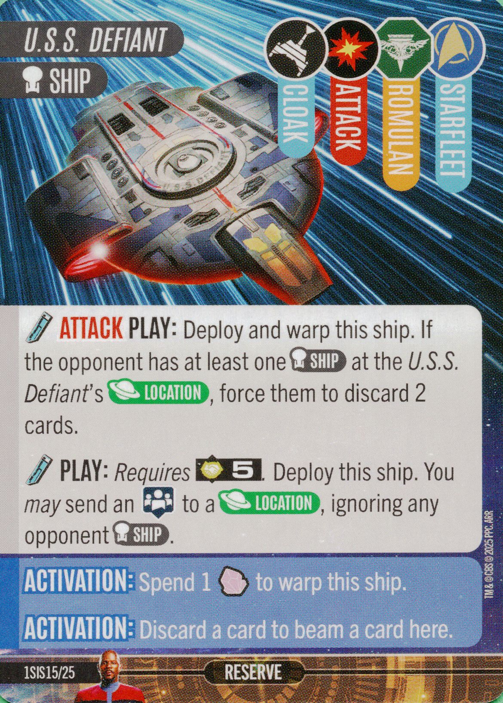
Sisko's second ship gets the Romulan, Cloak, and Attack tags (so watch out for anti-cloak cards like Tachyon Detection Grid). In addition to the standard table activations, the Defiant has two play actions with normal token costs. The first attack Play action allows for a deploy and warp, and if you warp to a location with an opponent's ship, they are forced to discard two cards. I'll be honest, as a solo player this falls flat because the bots don't discard anything, but it's a pretty standard deploy action for a ship where you don't have to pay for the first warp. The second play action requires five Influence and also deploys the Defiant. You also get to send an Away team to a location ignoring your opponent's ships, which is the standard benefit most cloaked ships get.
↑ back to topStrange New Worlds (Directive)
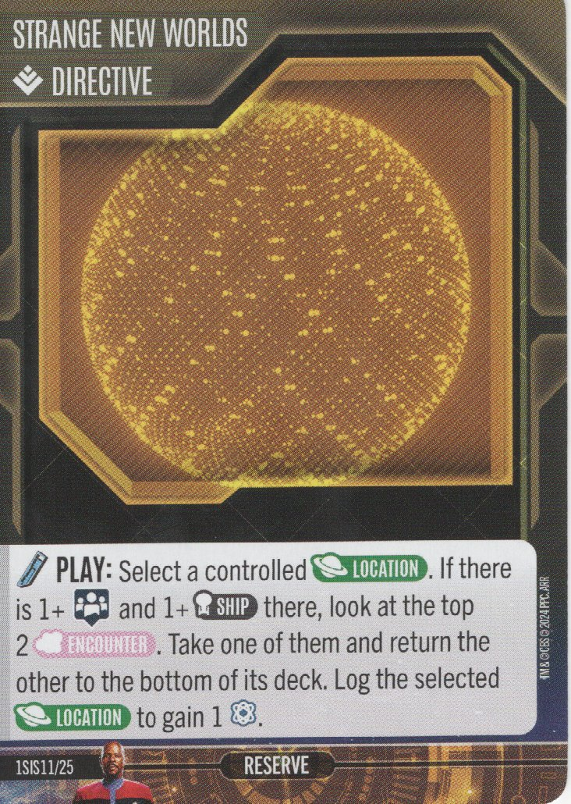
This is the same directive Picard has in his Available cards, and is the chief way of getting encounters. Sisko will suffer from losing the point at the endgame when he logs the selected location, and he will have to discard the ship stationed there. I always hope to get People of Bajor out of my Reserve Deck with Kira, so then my hope is that the Defiant or Miles will come up first. Strange New Worlds is probably the last one I hope for, not because I can't use it but because logging a location early isn't necessarily as beneficial for Sisko as some other captains. Still, getting an encounter is important so if the opportunity presents itself and I'm not logging Bajor, I'll probably do it for the encounter. You can burn through Sisko's Reserve very quickly if you time it right and keep a lot of cards in play, so make sure you're ready to pay for the upcoming developments.
↑ back to topSisko's Development Cards
Sisko has seven Development cards that consist of three persons, two cargo, a location, and an encounter. Remember the costs here, as they're a bit steep compared to some captains, and more Latinum intensive than Picard or Shran.
↑ back to topSelf-Replicating Mines (Cargo)
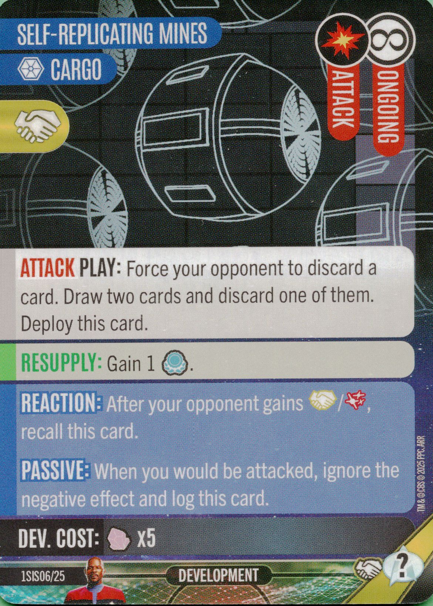
The free play action here is an attack that forces your opponent to discard a card while giving you two card draw (discarding one of them). The card is then ongoing and provides an Influence tag. Its resupply effect gives one glory, which would be great if it stuck around long enough to get used more than maybe once, or sometimes not at all. You do get to recall the card to your hand anytime an opponent gains on the influence or military tracks, which can be beneficial for playing this card for multiple turns in a row. The passive effect kicks in when you're attacked, ignoring any negative effects (you may still get positive effects) and logging Self-Replicating Mines. There's an influence focus for endgame points which is usually a good track for Sisko by endgame, but it comes at a five Dilithium cost. I'll be honest, this card did not factor into my gameplay that often against the bots. I could see there being utility if you could get it out early, but all it takes is one attack card from your opponent and it's gone.
↑ back to topJulian Bashir (Person)
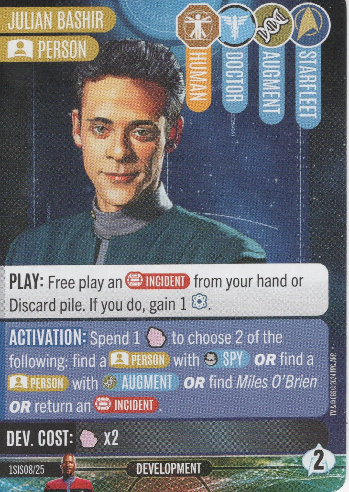
One of the only Augment cards in the game at present, Bashir has a free action that lets you free play an incident from your hand or discard pile (always prefer discard pile) and gain a Research skill. You don't just return the Incident though, so you may need to pay costs such as a card discard or putting one on top of your deck. His activation ability is highly thematic, allowing him to pay one Dilithium to pick two options among four. The first is finding a Person with the Spy tag, which includes Garak from Sisko's developments and reflects his Section 31 ties. The second lets him find a Person with an Augment tag, which right now is no one except Bashir himself. Third is finding his best buddy Miles O'Brien. Finally, he can return an incident. You'll almost always be able to do the last two, making Bashir a pretty useful duty officer. He scores two points.
↑ back to topWorf, Son of Mogh (Person)
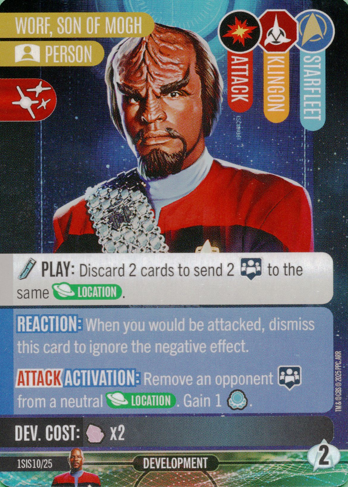
I think Michael Dorn looks better in this red uniform than he did in TNG. He's also a better Person card as a Development in Sisko's deck than an Available card in Picard's. He gains a Military Skill but maintains his Klingon/Starfleet/Attack tags. His Action allows you to discard two cards to send two away teams to the same location, which is pretty powerful on its own. But where he really shines is as a duty officer, where he has an attack activation that allows you to remove an opponent away team from a neutral location and gain a glory. No action token or catch here, just remove an opponent away team each turn. And to top that, he gets a reaction that allows you to dismiss him to avoid an attack from your opponent. He's a pretty darn great development. He also scores two points.
↑ back to topOrb of the Emissary (Encounter)
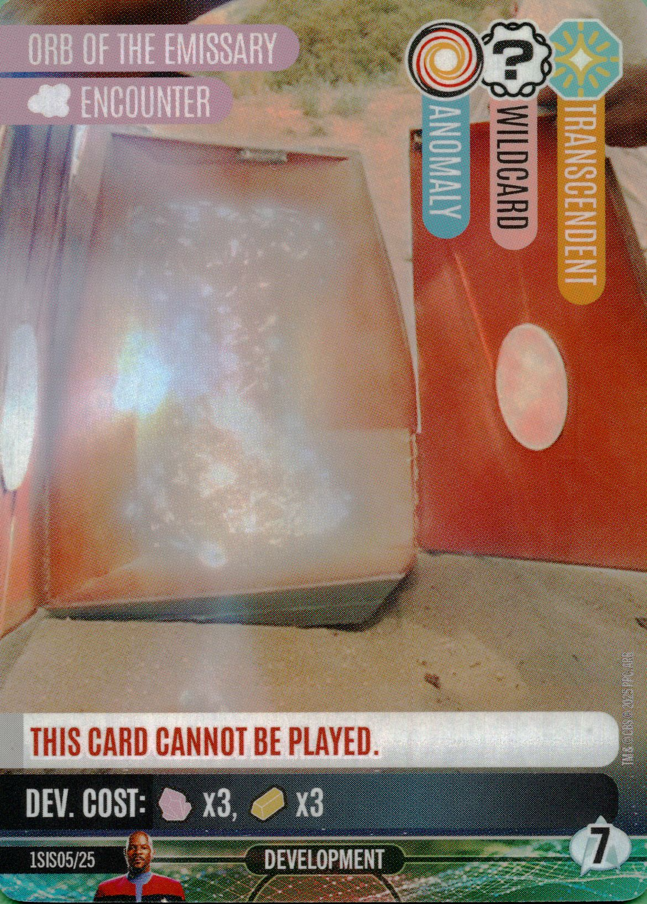
First off, this is the only Encounter development in the game so far, which is kind of cool. It also is pretty expensive, at three Dilithium and three Latinum. It has the Anomaly, Transcendent, and Wildcard tags, which means that any card that lets you find a card with a particular trait will find Orb of the Emissary once it's been developed. The card text here is simple but profound, saying "This card cannot be played." To be clear, it can be beamed (see page 10), which is the way to use it as "in play" for purposes of benefiting from the Wildcard tag for missions. It also comes with a hefty seven points, making it worth getting at some point before the game ends.
↑ back to topOrb of Prophecy and Change (Cargo)
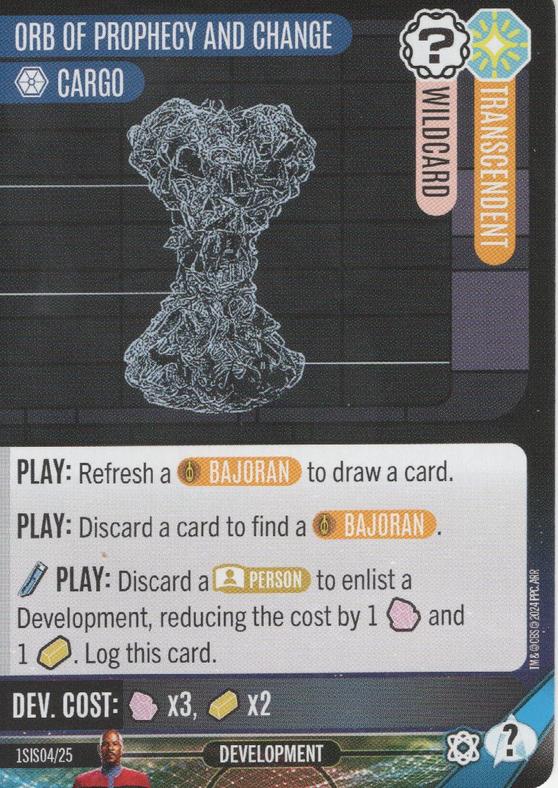
I think this is Sisko's best card, and I'm not sure it's even close. It does have an expensive cost of three Dilithium and two Latinum, and it isn't likely to score much as Sisko doesn't usually focus on the Research track. However, the Transcendent and Wildcard traits are invaluable on their own (as we saw from Orb of the Emissary). Additionally, it has three actions. The first is a free play where you can refresh a Bajoran tagged card to draw a card. The most obvious use here is to refresh Bajor to draw a card, and if you already used Bajor to draw one or two cards because of its activation text, that's a total card draw of three to five cards simply using Orb of Prophecy and Change. The second free action allows you to discard a card to find a Bajoran. The final action costs an action token and lets you discard a person to enlist a Development at a discount, then you log the Orb. I think this is typically a final turn strategy to help get one last push for points in the endgame, because you'll want to use the first action whenever you can. I don't think I'm exaggerating that if you can get this card early using Ancient Relay Station or Sisko's A Call to Arms mission, you should try to.
↑ back to topStarbase 375 (Location)
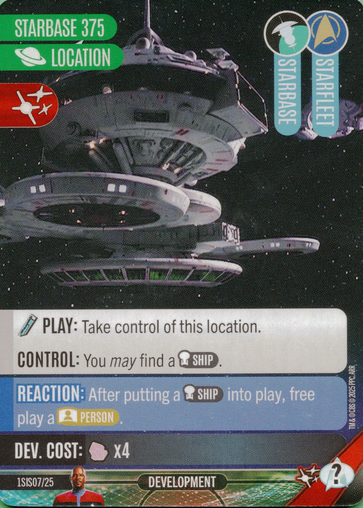
Sisko's temporary home away from DS9, Starbase 375 is a four Dilithium Development with a Military skill and the expected Starfleet and Starbase tags. Its control action allows you to find a ship, which is useful but only once, and could only help you thin your Reserve deck by finding the Defiant if you manage to use A Call to Arms or Ancient Relay Station to get a Development out before your Reserve is depleted. It has a reaction that lets you free play a person whenever you put a ship into play, which includes a non-deployment action like the Rio Grande has. It also scores for Military Focus. I think there's probably some really clever ways to use this to get more Person cards out for free, but I'm not sure you can get it early enough for it to stand out against Worf or the two Orbs. Even Bashir has more utility. But once it's out, it's a great way to get some Person cards played for free once a turn.
↑ back to topGarak (Person)
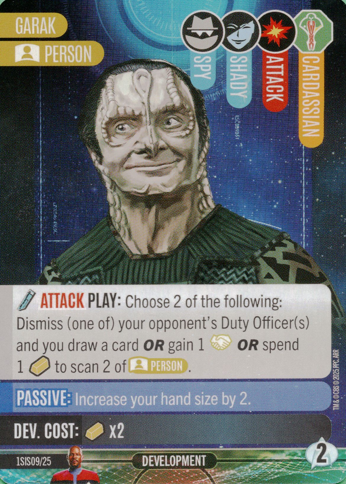
A simple tailor, or so I've heard. Garak has Cardassian, Attack, Shady, and Spy tags, which makes me really want to watch DS9 and find out how those all work together. He has an unusual development cost, which is two Latinum, likely reflecting that he can be bought. His attack play action allows you to choose two options: Dismiss one opponent duty officer and you draw a card, gain one Influence, or spend one Latinum to scan two of the Person Deck. Obviously it's going to depend on what I have and what I need, but gaining a Person, a card, and forcing an opponent discard is usually going to be what I choose. His passive is quite strong, increasing hand size by two, which is probably the most compelling reason to get him early if you're going to do so. Just like Bashir and Worf, he scores two points.
↑ back to topWhen deciding which Development to get first, I like to use A Call To Arms to not only get the Orb of Prophecy and Change a bit early, but also in order to get a discount on the Latinum cost required to enlist it. It's a solid card draw engine, but also a great way to get your other two missions accomplished. There's an argument for getting Starbase 375 early if you're trying to thin your deck quicker by grabbing the Defiant out of your Reserve, but beyond that I'm not sure there's a ton else that's super compelling. After that, and assuming you get A Call To Arms done before you start enlisting any developments the standard way, I think you can't go wrong with Worf in most situations. He's also good if your supply of Latinum is low and you're not looking to get the Orb of the Emissary right away. If you're struggling with managing Incidents, Julian is the next good choice for a person. I think Garak isn't bad, especially for the hand size increase, but I'd usually go for Bashir or Worf first. If you're getting attacked a lot by an opponent, you might consider getting Self-Replicating Mines early to prevent that attack in conjunction with Worf. If you don't have a lot of time for Developments and are limited to one or two, I would strongly suggest pulling the Orb of the Emissary if for nothing else than the points.
↑ back to topPutting It All Together
I think most relatively skilled players are going to thrive with Sisko, especially if the game doesn't end early in the Burn or get rushed by an opponent like Sela. Alternatively, if he doesn't have good momentum, most of his point payoffs take a little time to get underway, so he can still be ramping up towards those beneficial Developments while somebody else is ready to end the game. So I would encourage Sisko players to gauge tempo best they can. If your opponent is rapidly removing glory and you're still working through your first few Reserve cards, then you need to beam cards and log them to pick up the pace.
Sisko has the great advantage of getting cards back from DS9, so use that to your advantage when you can. Do you know you won't be using Strange New Worlds for a little while? Beam it out of there so you can get real benefits from your deck. Sisko has the potential to rather easily max out Influence and Military, so be on the lookout for cards that match that tag. Likewise, consider that Kira can be used to get People of Bajor early, but she can also be repeatedly used to raise your Military. The benefit to you is huge compared to the one Influence your opponent gets.
I would also be looking to add one or two ships early for purposes of the A Call To Arms mission, so that you can try to get a useful development into your deck. Then, using the wormhole, you could potentially be finding the Orb of Prophecy and Change every single turn. That constant combo is going to be hard for any opponent to stop. Don't be afraid to log some cards as they become less useful. Yes, I like using Dax and Quark early, but once Odo comes out it's completely reasonable to use him to log your entire starting person squad. If you can replace all of them with Bashir, Worf, and Garak, you'll be in a great position and have a thinned out deck. Use O'Brien to get ships back into the fray or assist with even more card draw, and you'll have the resources to pay for Developments.
Because Sisko has so many away teams, it's unlikely you'll have to worry about whether you should send away teams to neutral locations from your controlled ones. You can easily keep three for card draw and three for controlling neutral locations. If you do decide to use Strange New Worlds (which I assume you will at least a few times a game) try to make sure you can keep at least one away team on Bajor so that card draw can continue. Also remember that you do lose a point for every controlled location that ends up logged, because Sisko won't score them for his endgame points. Still, that trade off for an Encounter is almost universally worth it.
You've got some decent attacks with Kira, Worf, Garak, and the Defiant, so you don't necessarily need to be seeking more immediately. I think that Sisko does a good job with somewhat mutually assured destruction, as his cards are good threats to an opponent but also can be used to help both players or for non-aggressive actions. Kira providing an opponent with an Influence, Worf and Self-Replicating Mines being used for defense, etc. And that's very thematic for Sisko. When he's threatening something, it's intimidating. But you know he'll follow through and maybe drag the entire quadrant into a war. Unless we choose a different path. Thankfully, he has a lot of extremely viable paths forward for success.
Video Playthroughs
Playthroughs by Paul Grogan (Gaming Rules!) featuring Sisko: